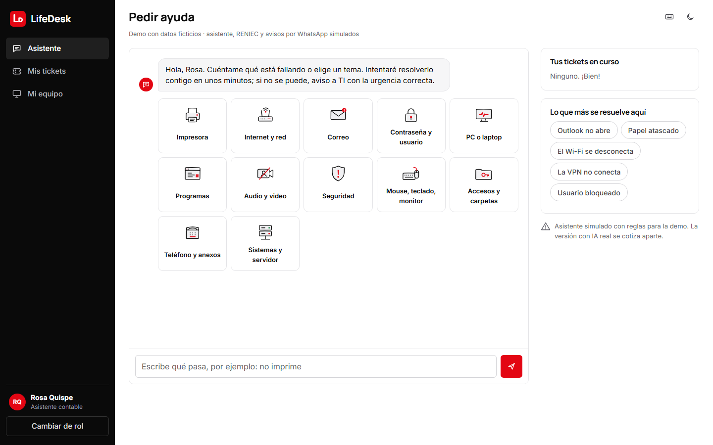
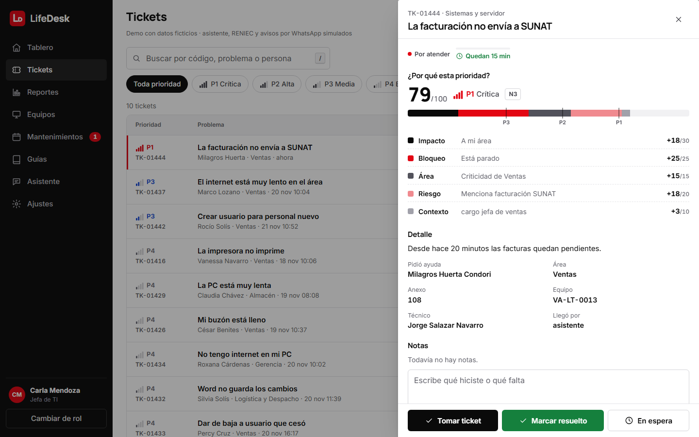
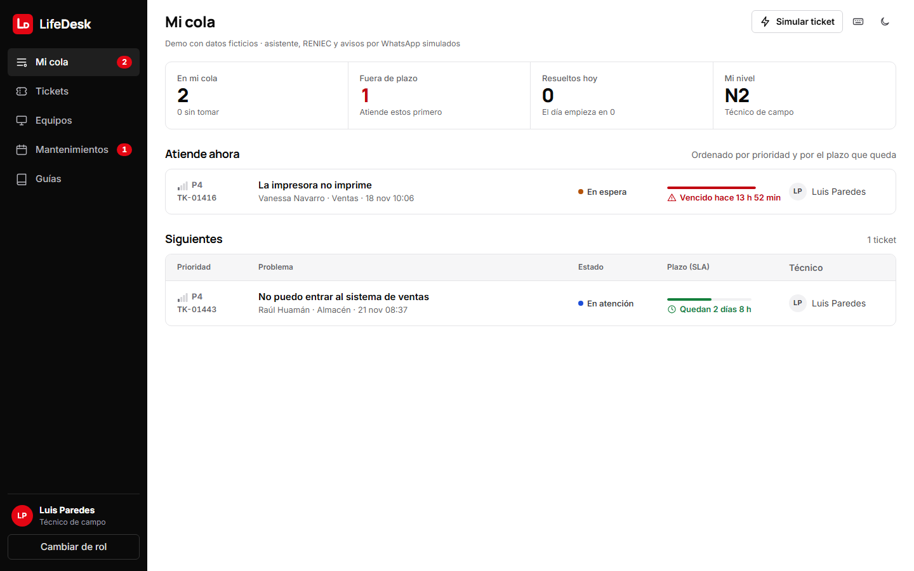
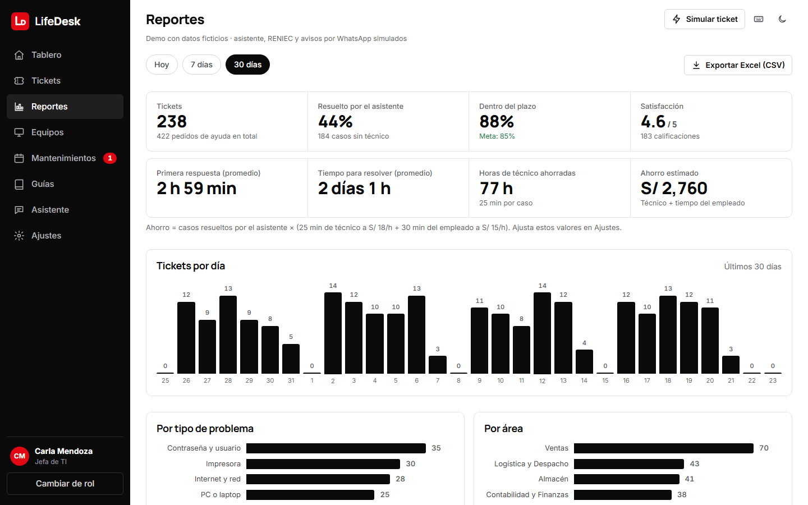

Que lo urgente se atienda primero.
LifeDesk es la mesa de ayuda de TI para tu empresa. Un asistente resuelve lo básico en minutos y, si no puede, crea el ticket con su urgencia calculada de 0 a 100 y lo asigna al técnico correcto.
Sin instalar nada. Funciona en PC, tablet y celular.
Pruébalo: ¿qué pasó?
Hoy el soporte se pide por WhatsApp, por correo y a gritos.
- Se atiende al que más insiste. Mientras tanto, la caja que no factura a SUNAT espera detrás de un mouse sin pilas.
- El técnico repite lo mismo diez veces al día. Reiniciar la impresora, restablecer una contraseña, configurar el micrófono de Teams.
- Nadie sabe cuánto demora ni cuánto cuesta. Sin tiempos medidos no hay forma de mejorar ni de justificar más personal o equipos nuevos.
Cómo funciona
El empleado le cuenta el problema al asistente
Elige un tema o lo escribe con sus palabras. El asistente lo guía paso a paso con instrucciones cortas. Si funciona, listo: no hizo falta ningún técnico.

Si no se resuelve, el ticket llega ya calificado
Dos preguntas bastan: ¿a quién afecta? y ¿puedes seguir trabajando? LifeDesk suma el área, las palabras de riesgo (SUNAT, virus, servidor) y el contexto, y muestra por qué le dio esa prioridad.

Cada técnico ve primero lo que más importa
La cola se ordena por prioridad y por el tiempo que queda. Si un ticket es difícil, se escala de N1 a N2 o N3 con un botón y el historial viaja con él.

La jefatura mide tiempos y ahorro
Cumplimiento de plazos, problemas que se repiten, equipos que fallan demasiado y cuánto ahorra el asistente en horas y en soles.

Capturas del demo funcionando, con datos de una empresa ficticia.
Todo lo que trae
¿Cuánto ahorraría tu empresa?
Mueve los valores. Es una estimación: el porcentaje real depende de qué tan seguido ocurren los problemas básicos en tu empresa.
¿Y si el asistente usa IA de verdad?
En el demo, el asistente funciona con reglas. Con IA entiende frases libres, hace preguntas de seguimiento y aprende de tus guías. Esto costaría el uso del modelo al mes:
Cómo se calcula
Cada mensaje envía al modelo unas 5,000 «fichas» (tokens) de entrada: las instrucciones, las guías de tu empresa y la conversación; y recibe unas 250 de respuesta. Precios de lista de Anthropic por millón de tokens, consultados el 3 de noviembre de 2026: Haiku 5.5 US$ 0.10 entrada / 0.50 salida; Sonnet 5.5 US$ 2 / 10; Opus 5.5 US$ 4 / 20. Con caché de instrucciones (prompt caching) la parte repetida cuesta menos. No incluye IGV, el servidor que conecta la página con la IA ni la implementación.
Pruébalo ahora
Entra con el rol que quieras. Hoy empieza en cero: lo que hagas aparece en vivo en los demás roles del mismo navegador.
Qué es simulado en el demo
- La empresa, las personas y los equipos son ficticios.
- El asistente usa reglas, no IA.
- La consulta RENIEC, los avisos por WhatsApp, los adjuntos y la lectura de etiquetas con cámara.
- La temperatura y la salud del disco de los equipos.
Los datos se guardan solo en tu navegador.